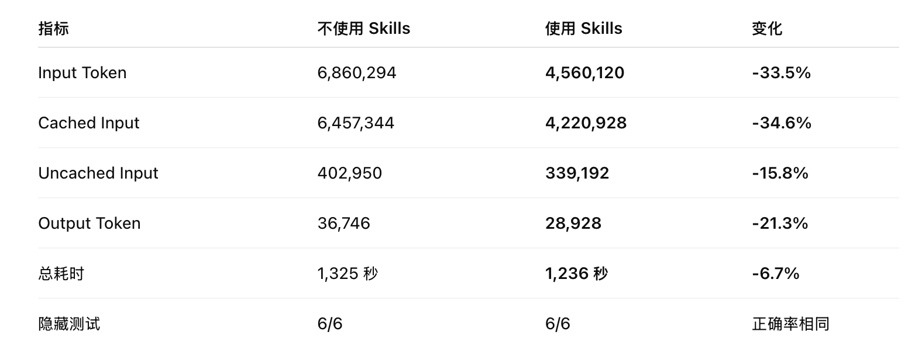

PySonar2 如何帮助 AI 节省 Token
结论
今天有一个 “重大” 发现想要分享：PySonar2 可以大幅度降低 AI 在执行 Python 项目修改的时候的 Token 消耗。
这是 ChatGPT 运行出来的 benchmark 结果：

补充一下这个 benchmark 任务的定义：

具体任务有 2 个：

概括来说，就是基于一个测试专用的大型 Python 项目，设定两个方向的任务，一个任务横跨多个目录和文件，另一个任务目标明确、不需要跨文件定义，然后分别用 skill 和不用 skill 执行。
结果如你所见，使用了 skill 之后，速度略微有提高，token 消耗量则直接减少 30%！
说明
说明一下，刚才提到的 skill，是指基于 PySonar2 源码封装的、符合 AI Skills 规范的 skill，你可以直接告诉 ChatGPT：
帮我安装这个 skill 到用户级目录：https://github.com/smallyunet/pysonar2
就可以了。
这个 PySonar2 的仓库是 fork 出来的，因为原版的 PySonar2 仓库是王垠 13 年前的项目，已经有一些工程和特性方面的 “过时”，所以做了一点点新的工程方面的包装。当然 PySonar2 最核心的词法分析、类型推断是没有过时的。
除了这个 AI skill，我还把 PySonar2 以 VS Code 插件的形式发布了，安装后可以在 VS Code 上打开 Python 代码之后，鼠标 hover 上去看到 PySonar2 的类型推断：
思路
解释一下为什么 PySonar2 可以帮助 AI 节省。
如果你是程序员并且经常让 AI 写代码，一定会看到 AI 会使用大量的 rg，每一次任务都会把各种代码文件看一遍，然后继续执行代码修改。而 PySonar2 可以提供一种基于代码语义的、基于 AST 结构分析出来的这种内容：
{
"symbol": "User",
"definitions": [
{"file": "models.py", "startLine": 12}
],
"references": [
{"file": "service.py", "startLine": 48},
{"file": "tests/test_service.py", "startLine": 31}
],
"affectedFiles": [
"models.py",
"service.py",
"tests/test_service.py"
]
}
直接在一个文件里把每个变量定义的来龙去脉、相关源码文件总结出来。相当于本地建立了一个索引，AI 直接看索引，而不需要每次看一遍全部代码。
因为任何 AI 工具目前都有两方面限制：
- 使用 AI 要花费 Token，Token 就是钱。省 Token 就是省钱
- 所有基于 Transformer 架构的 AI 模型，都有上下文限制。这种建立索引的做法可以节省上下文空间
对比
那么 PySonar2 现在是否还具有某些独特的价值呢？答案是有：

很多同类型的、号称节省 Token 的项目，都是基于关键词匹配、甚至 embedding 的匹配，与 PySonar2 的语义分析不在一个层面。
不过毕竟已经过去了 13 年，PySonar2 已经 13 年没有在学术理论上继续更新，要说 PySonar2 仍然处于世界前沿是不可能的。但是 PySonar2 因为开源、代码轻量、逻辑清晰，在 Agent 适配方面也许会有独特的优势和潜力：

启发
1. Python 语言只是开始
既然针对 Python 项目，PySonar2 可以帮助 AI 节省大量的 Token 消耗，那么其他语言的项目呢？JavaScript 是否可以借鉴同样的思路？以及更多脚本语言？同样的思路，已经不局限于 PySonar2 这个工具了。
2. 帮助 AI 节省 Token
比起让 PySonar2 这个古老的项目重新发挥价值，我更在意的事情是：在 AI 时代，还有哪些代码工具是有价值的？
因为人已经不需要写代码了，甚至不需要看代码了。但是 PySonar2 在这个场景下发挥了巨大的作用，让我看到了不一样的希望：
- 帮助 AI 节省 Token 是一个好的工具方向。
（与此同时，我还在优化另外一个项目：EchoEVM。基于 EchoEVM 的 EVM 解释器底座，让 AI 能够在编写 Solidity 脚本的时候、有能力看到脚本文件字节码级别的执行过程。这种 debug 工具对人类没什么用，但是对于 AI 极其有用，因为人类看不懂字节码、AI 可以）
- 底层原理在 AI 时代不会过时。
PySonar2 作为拥有学术级别原理的工具，在人类已经不需要写代码的今天，仍然能够发挥价值、让 AI 节省 Token、给使用者省钱，这是真正意义上的效率工具。
相关阅读
如果你不了解 PySonar2 的背景，分享几篇相关文章可以看一下：